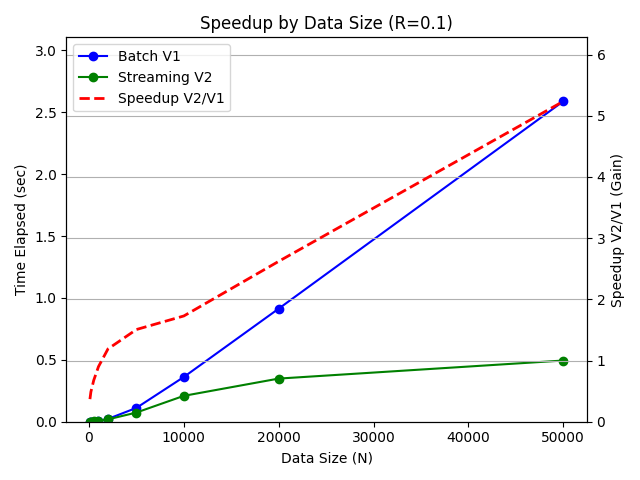
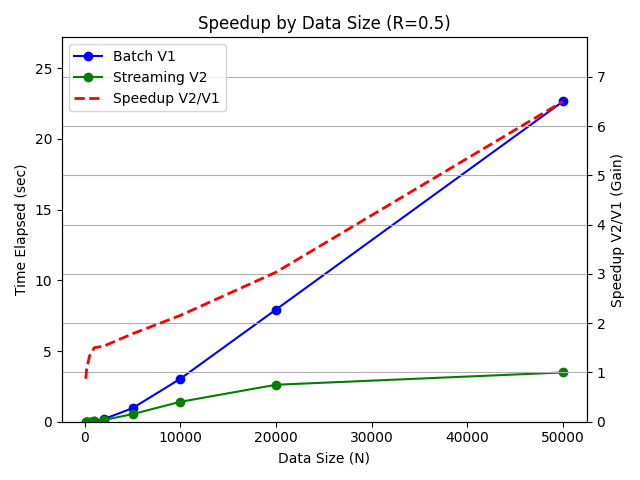

Dynamic Point Aggregation

1. Design Summary
The optimal runtime complexity for dynamic point aggregation from \(N\) point values to \(O(N)\) disjoint intervals is \(\Omega(N \log N)\) due to the ordering requirement. The request handler uses put requests to add new values and get requests to make a new interval sequence.
Because offline scenarios (batch data) have known usage patterns, the batch variant (V1) can optimize the hot path by simplifying high-usage put requests to \(O(1)\) and expanding low-usage get requests to \(O(N \log N)\).
However, because online scenarios (streaming data) do not have known usage patterns, the streaming variant (V2) must instead balance complexity between put requests (\(O(\log N)\)) and get requests (\(O(N)\)).
📊 Complexity Analysis
| Operation | Batch Variant (V1) | Streaming Variant (V2) | Comparison |
|---|---|---|---|
| Initial Setup | \(O(1)\) | \(O(1)\) | Equivalent |
| Batch Updates (N Put, 1 Get) | \(O(N \log N)\) | \(O(N \log N)\) | Equivalent |
| Streaming Updates (N Put, K Get) | \(O(K*N \log N)\) | \(O(N \log N + K * N)\) | V2 is Superior |
| Space Complexity | \(O(N)\) | \(O(N)\) | Equivalent |
2. Design Details
The batch variant (V1) uses an unordered set to add new values as data points in \(O(1)\) per put request and does one pass over a new sorted list with sweep line method to generate disjoint intervals in \(O(N \log N)\) per get request.
The streaming variant (V2) uses two sorted sets with binary search to add new values as interval bounds in \(O(\log N)\) per put request (or \(O(\sqrt N)\) with python sortedcontainers) and does one pass over the existing sorted sets with sweep line method to generate disjoint intervals in \(O(N)\) per get request.
3. Design Trade-offs
The Efficiency Paradox
Although the batch variant (V1) was 2.7x faster in small-scale offline scenarios (N=100, R=0.1), the streaming variant (V2) was 6.4x faster in large-scale online scenarios (N=50000, R=0.5). This performance gain in online scenarios was due to the runtime complexity of the streaming variant at \(O(N \log N + K*N)\) increasing more slowly with data size compared to the batch variant at \(O(K*N \log N)\).
With python sortedcontainers, these runtime complexities were instead \(O(N \sqrt N + K*N)\) and \(O(K*N \log N)\) respectively. Although the streaming variant was still faster, the performance gain was less dramatic since \(O(\sqrt N)\) increases faster than \(O(\log N)\).
Streaming Benchmark Results
When the request traffic was mostly put requests (R=0.1) to simulate offline scenarios, the batch variant (V1) was 2.7x faster when data size was smaller (N=100) and the streaming variant was 4.9x faster when data size was larger (N=50000).

When the request traffic was balanced beween put and get requests (R=0.5) to simulate online scenarios, the batch variant (V1) was 1.2x faster when data size was smaller (N=100) and the streaming variant was 6.4x faster when data size was larger (N=50000).

These results highlight that the batch variant (V1) is suitable for smaller data streams and offline scenarios, whereas the streaming variant (V2) is suitable for larger data streams and online scenarios.
| TestCaseID | DataSize | RequestDistribution | V1TimeElapsed | V2TimeElapsed | SpeedupV1V2 | SpeedupV2V1 |
|---|---|---|---|---|---|---|
| 0 | 100 | 0.100 | 0.000 | 0.001 | 2.706 | 0.370 |
| 1 | 100 | 0.200 | 0.000 | 0.001 | 1.998 | 0.500 |
| 2 | 100 | 0.500 | 0.001 | 0.001 | 1.289 | 0.776 |
| 3 | 100 | 0.800 | 0.002 | 0.003 | 1.042 | 0.960 |
| 4 | 200 | 0.100 | 0.001 | 0.001 | 2.115 | 0.473 |
| 5 | 200 | 0.200 | 0.001 | 0.001 | 1.642 | 0.609 |
| 6 | 200 | 0.500 | 0.003 | 0.003 | 1.010 | 0.990 |
| 7 | 200 | 0.800 | 0.013 | 0.010 | 0.821 | 1.218 |
| 8 | 500 | 0.100 | 0.002 | 0.003 | 1.606 | 0.623 |
| 9 | 500 | 0.200 | 0.004 | 0.005 | 1.116 | 0.896 |
| 10 | 500 | 0.500 | 0.020 | 0.016 | 0.816 | 1.226 |
| 11 | 500 | 0.800 | 0.071 | 0.051 | 0.726 | 1.378 |
| 12 | 1000 | 0.100 | 0.008 | 0.009 | 1.059 | 0.944 |
| 13 | 1000 | 0.200 | 0.016 | 0.014 | 0.861 | 1.162 |
| 14 | 1000 | 0.500 | 0.070 | 0.050 | 0.715 | 1.400 |
| 15 | 1000 | 0.800 | 0.273 | 0.186 | 0.680 | 1.471 |
| 16 | 2000 | 0.100 | 0.028 | 0.025 | 0.920 | 1.087 |
| 17 | 2000 | 0.200 | 0.059 | 0.046 | 0.776 | 1.289 |
| 18 | 2000 | 0.500 | 0.236 | 0.159 | 0.671 | 1.489 |
| 19 | 2000 | 0.800 | 1.002 | 0.651 | 0.650 | 1.538 |
| 20 | 5000 | 0.100 | 0.140 | 0.105 | 0.751 | 1.331 |
| 21 | 5000 | 0.200 | 0.326 | 0.216 | 0.663 | 1.509 |
| 22 | 5000 | 0.500 | 1.251 | 0.735 | 0.587 | 1.703 |
| 23 | 5000 | 0.800 | 5.099 | 3.020 | 0.592 | 1.688 |
| 24 | 10000 | 0.100 | 0.466 | 0.266 | 0.572 | 1.748 |
| 25 | 10000 | 0.200 | 1.031 | 0.541 | 0.525 | 1.906 |
| 26 | 10000 | 0.500 | 4.038 | 1.950 | 0.483 | 2.071 |
| 27 | 10000 | 0.800 | 15.824 | 7.414 | 0.469 | 2.134 |
| 28 | 20000 | 0.100 | 1.198 | 0.504 | 0.421 | 2.376 |
| 29 | 20000 | 0.200 | 2.633 | 0.990 | 0.376 | 2.660 |
| 30 | 20000 | 0.500 | 10.557 | 3.617 | 0.343 | 2.919 |
| 31 | 20000 | 0.800 | 42.168 | 14.237 | 0.338 | 2.962 |
| 32 | 50000 | 0.100 | 3.473 | 0.695 | 0.200 | 4.996 |
| 33 | 50000 | 0.200 | 7.765 | 1.349 | 0.174 | 5.757 |
| 34 | 50000 | 0.500 | 30.483 | 4.756 | 0.156 | 6.410 |
| 35 | 50000 | 0.800 | 122.369 | 19.013 | 0.155 | 6.436 |
4. Design Optimizations
State Transitions
To ensure new point values are correctly merged with existing disjoint intervals, I applied Correctness by Design by separately handling the 3 overlap cases: the enclosed-by case (early exit if lower and upper bounds at insertion point are already aligned), the adjacent-to case (join with 1 or 2 neighbors if lower and upper bounds at insertion point are adjacent), and the distinct-from case (insert as new lower and upper bounds).
5. API Reference
data_streaming_accelerators.core.dynamic_point_aggregation
Classes
DynamicPointAggregationV1
Bases: DynamicPointAggregationBase
Source code in src/data_streaming_accelerators/core/dynamic_point_aggregation.py
11 12 13 14 15 16 17 18 19 20 21 22 23 24 25 26 27 28 29 30 31 32 33 34 35 36 37 38 39 | |
Functions
__init__()
Make new object for dynamic point aggregation api. Takes runtime O(1) and memory O(1).
Source code in src/data_streaming_accelerators/core/dynamic_point_aggregation.py
13 14 15 16 | |
addNum(value)
Entry point for put api.
Add new value to stream history if not already added.
Takes runtime O(1) and memory O(1).
Source code in src/data_streaming_accelerators/core/dynamic_point_aggregation.py
18 19 20 21 22 23 | |
getIntervals()
Make interval sequence from stream history. Takes runtime O(N Log N) and memory O(N).
Source code in src/data_streaming_accelerators/core/dynamic_point_aggregation.py
25 26 27 28 29 30 31 32 33 34 35 36 37 38 39 | |
DynamicPointAggregationV2
Bases: DynamicPointAggregationBase
Source code in src/data_streaming_accelerators/core/dynamic_point_aggregation.py
43 44 45 46 47 48 49 50 51 52 53 54 55 56 57 58 59 60 61 62 63 64 65 66 67 68 69 70 71 72 73 74 75 76 77 78 79 80 81 82 83 84 85 86 87 88 89 90 91 92 93 94 95 96 97 98 99 100 101 102 103 104 105 106 107 108 109 110 111 112 | |
Functions
__init__()
Make new object for dynamic point aggregation api. Takes runtime O(1) and memory O(1).
Source code in src/data_streaming_accelerators/core/dynamic_point_aggregation.py
45 46 47 48 49 50 | |
addNum(value)
Add new value to stream history if not already added. Takes runtime O(Sqrt N) and memory O(1).
Source code in src/data_streaming_accelerators/core/dynamic_point_aggregation.py
52 53 54 55 56 57 58 59 60 61 62 63 64 65 66 67 68 69 70 71 72 73 74 75 76 77 78 79 80 81 82 83 84 85 86 87 88 89 90 91 92 93 94 95 96 97 98 99 100 101 102 103 104 | |
getIntervals()
Make interval sequence from stream history. Takes runtime O(N) and memory O(N).
Source code in src/data_streaming_accelerators/core/dynamic_point_aggregation.py
106 107 108 109 110 111 112 | |